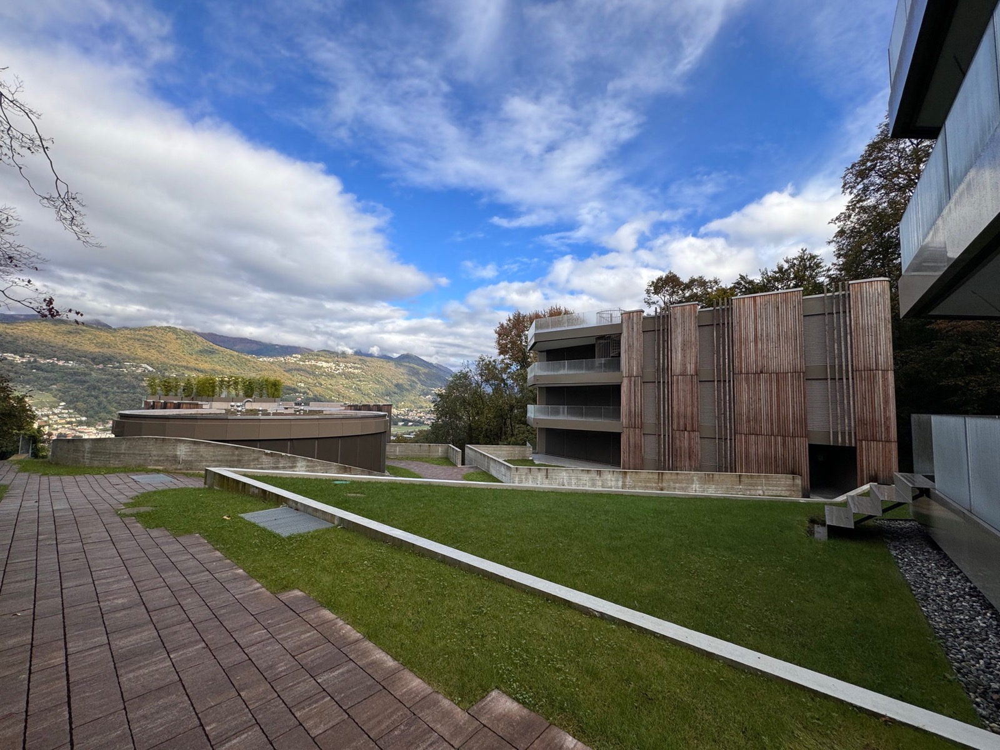
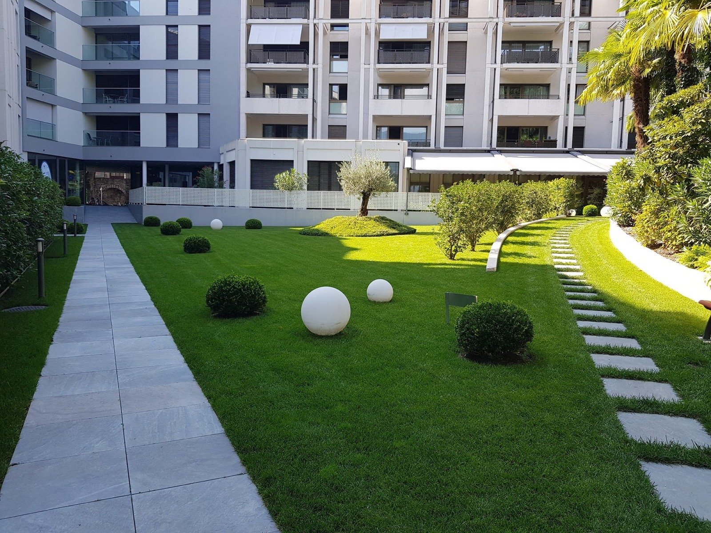
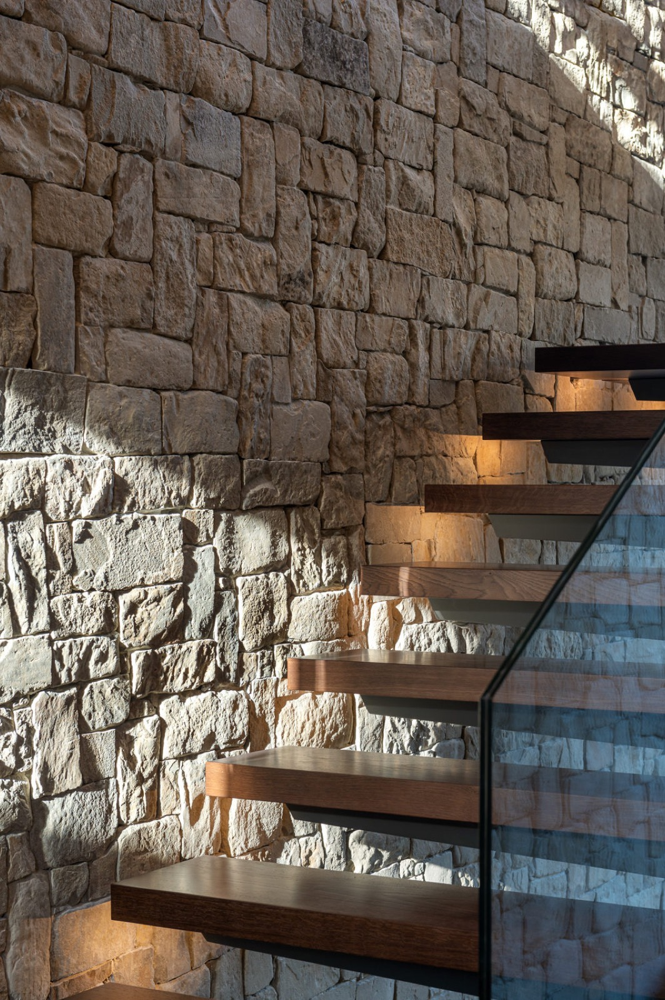
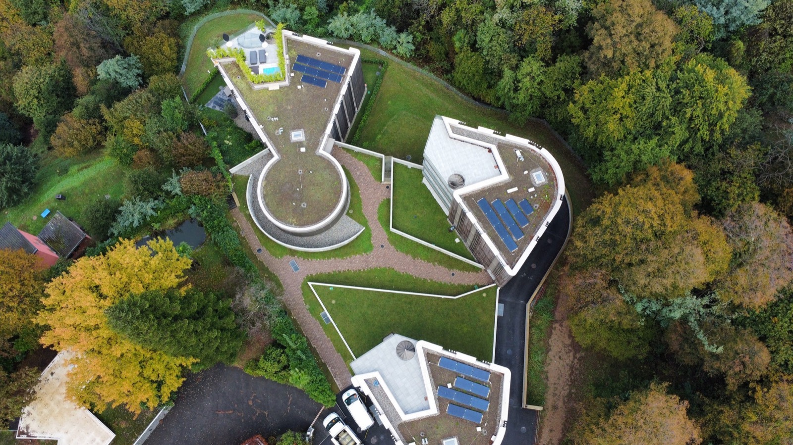
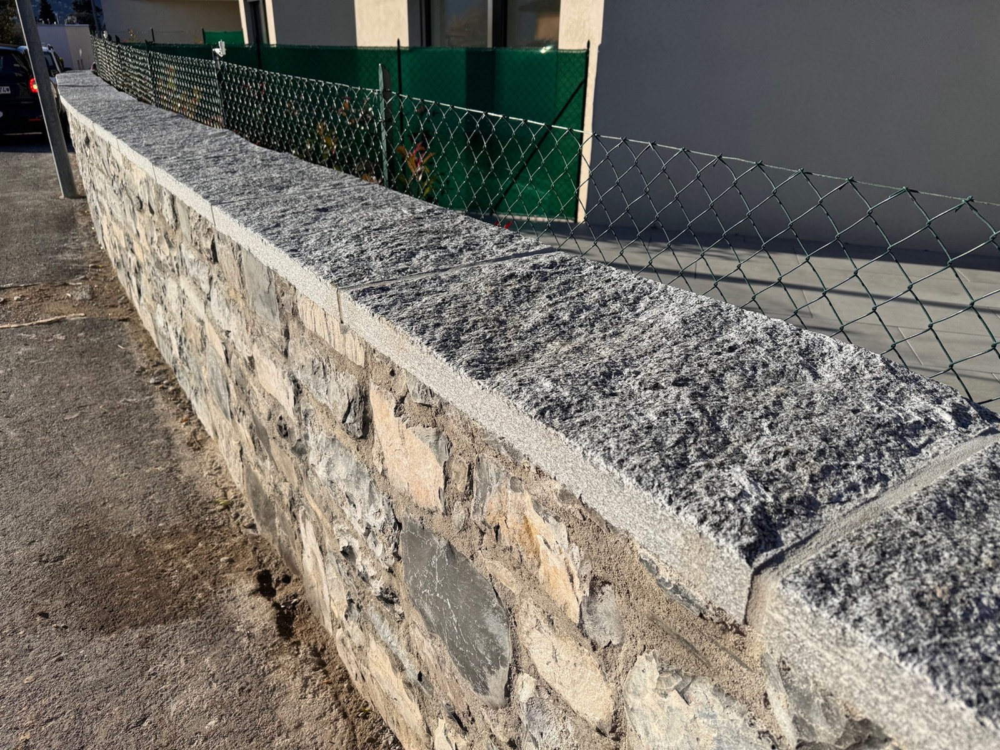
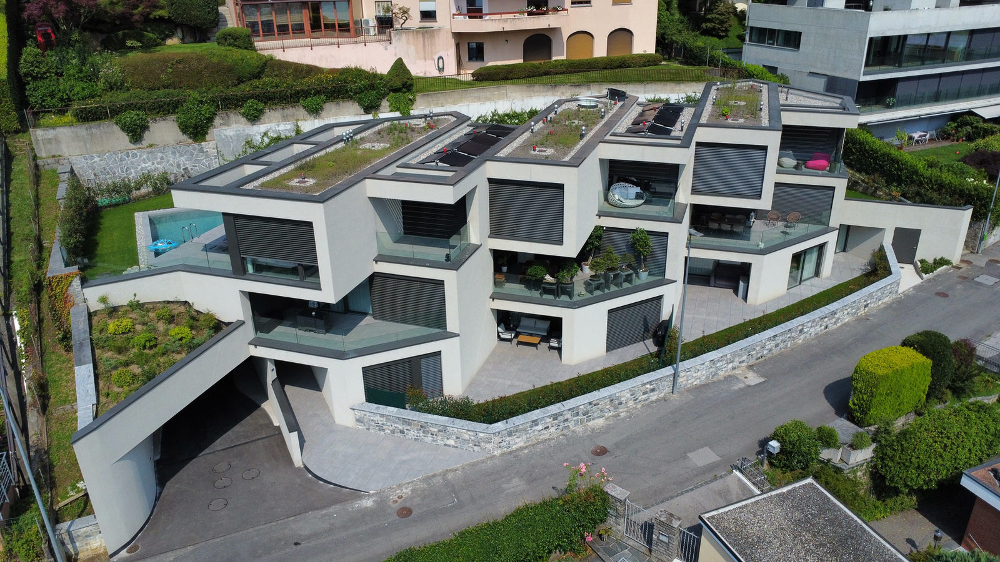
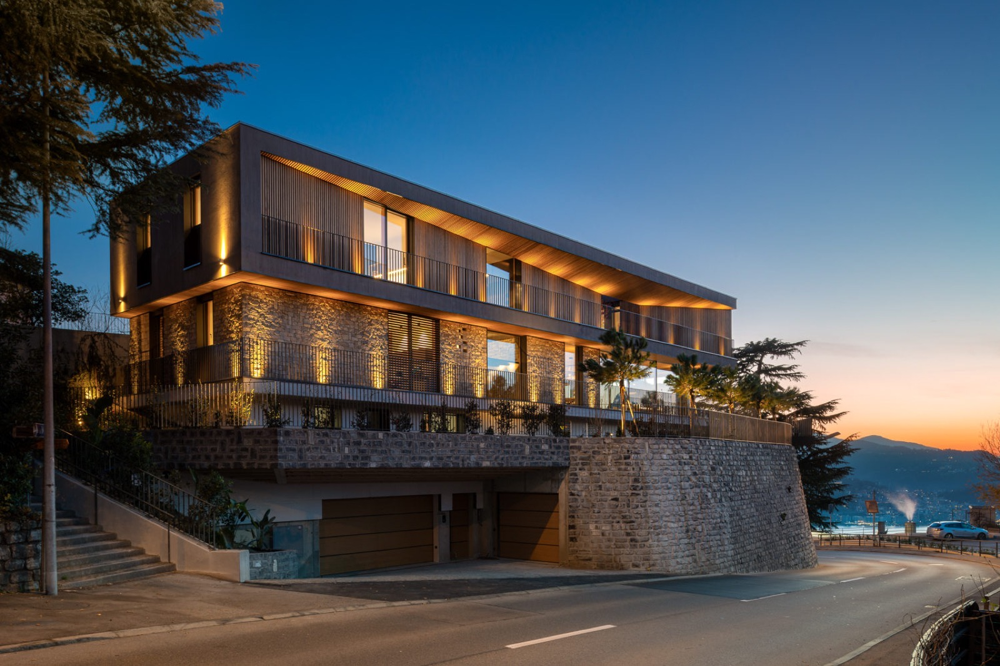

01
Architettura del verde
Progettazione, costruzione e manutenzione di giardini, sistemazioni esterne e opere di consolidamento. Dal rendering al prato posato, fino alla cura negli anni.
Agno, Luganese · dal 1990




1990l'anno da cui lavoriamo nel Luganese
25+collaboratori
1000+progetti realizzati
90+contratti annui di manutenzione
5,0su Google, 5 recensioni
Attività

01
Progettazione, costruzione e manutenzione di giardini, sistemazioni esterne e opere di consolidamento. Dal rendering al prato posato, fino alla cura negli anni.
02
Ristrutturazioni chiavi in mano e direzione lavori. Muri in sasso di Caprino posati alla romana, copertine in granito locale, rivestimenti in pietra a secco.
Muri e rivestimenti nei progetti
03
Gestione di immobili di proprietà, costruzioni e ristrutturazioni, vendite e affitti a breve o lungo termine, con servizi dopo la vendita.
Vedi gli immobiliDa terreno a giardino
05 / 05
Luce e cura
Luci, acqua, e la manutenzione che lo tiene in forma negli anni.
Pianta schematica di un giardino di esempio.
Progetti
Giardini privati, residenze, scuole, piazze e muri in pietra. Ecco una parte dei progetti realizzati.

Real estate
Vendiamo, affittiamo e gestiamo immobili nel Luganese. E cerchiamo terreni edificabili.
Riservato
Fondo di 604 m² in zona centrale, oggi con una casa di oltre 240 m² tra spazio commerciale e appartamento.
Prezzo su richiesta
Venduto
63 m² al primo piano di una residenza di 7 unità, con posteggio in autorimessa e cantina. Costruzione 2023.
Venduto
Cerchiamo
Avete un terreno da vendere? Parliamone.
Chiama Giuseppe PerriTeam
Maurizio Perri SA è un'impresa di famiglia con sede ad Agno e un vivaio a Savosa. Paesaggisti, architetti, giardinieri e muratori lavorano nella stessa squadra.
Lavoro preciso e di qualità. Personale cordiale e molto disponibile.
Una recensione su Google
Contatto
Un giardino da creare, un muro da rifare, una manutenzione da affidare. La consulenza e il preventivo sono gratuiti.